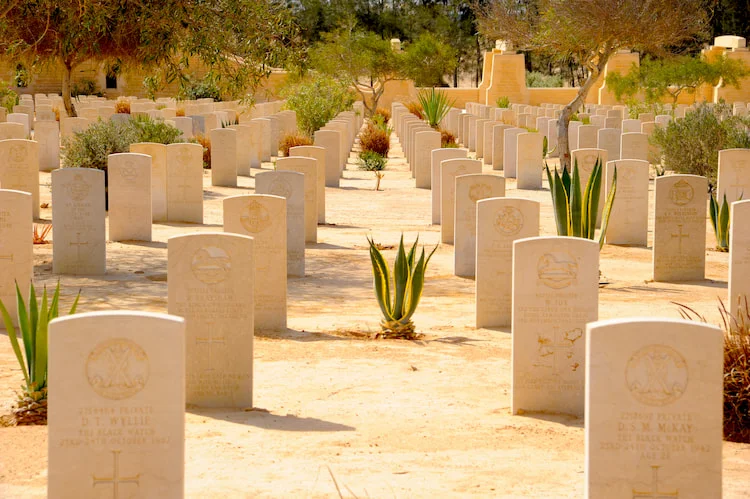
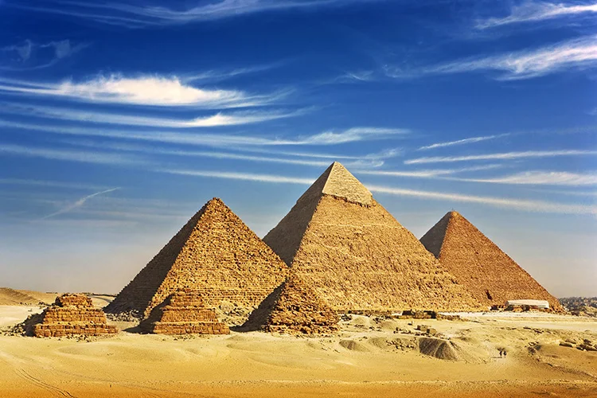
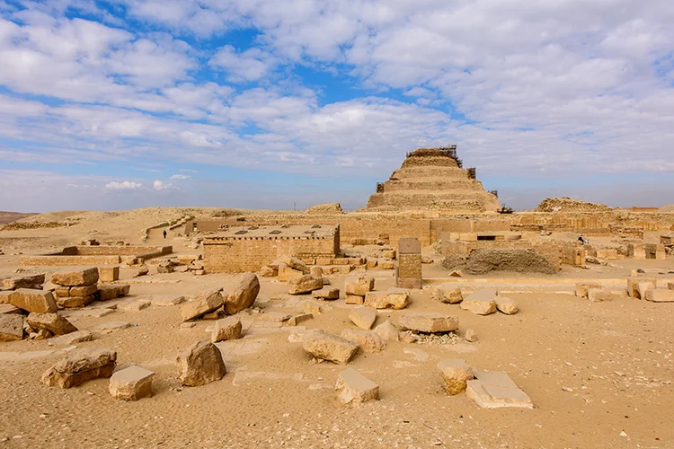
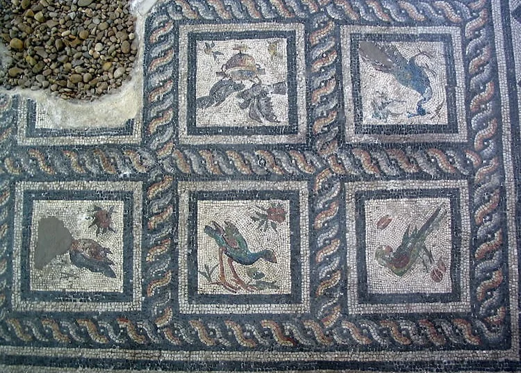

1. Abu Simbel

Abu Simbel is an archaeological site in Egypt housing a series of incredible Ancient Egyptian monuments, especially a number of rock temples. The most famous sites at Abu Simbel are the two Temples of Ramesses II. Known as Ramesses the Great (sometimes spelt Ramses), Ramesses II is one of the most famous Egyptian pharaohs and formed part of the Nineteenth Dynasty.
2. El Alamein Battlefield

El Alamein Battlefield in Egypt was the site a major victory by the Allied forces during World War Two, known as the Second Battle of El-Alamein. Over 3 years, Allied and Axis forces engaged in an ongoing conflict in the North African region, with Germany’s commander, Rommel, intent on capturing Alexandria and the Suez Canal. The victory was a vital turning point for the Allies, summarised succinctly by Winston Churchill: “It may almost be said, Before Alamein we never had a victory. After Alamein we never had a defeat.”
3. Giza

Giza or ‘Al Giza’ is undoubtedly a tourist hotspot in Egypt and the site of some of Ancient Egypt’s most famous landmarks, most notably, the famous Pyramids of Giza. Amongst the pyramid complex may be found the pyramids of Pharaohs Khufu, Khafra and Menkaure. The largest pyramid in Giza – and the world! – belongs to the second king of the Fourth Dynasty, Khufu or “Cheop”.
4. Saqqara

Saqqara in Egypt is the ancient necropolis of the city of Memphis, the capital of Ancient Egypt, which was founded in 3000 BC by Menes. It contains a host of burial chambers and pyramids, and is the oldest complete stone building complex in history. Now a UNESCO World Heritage site, Saqqara is home to 11 major pyramids sprawled over 6 miles.
5. Villa of the Birds
